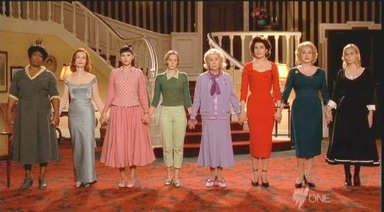
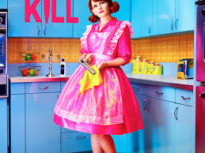
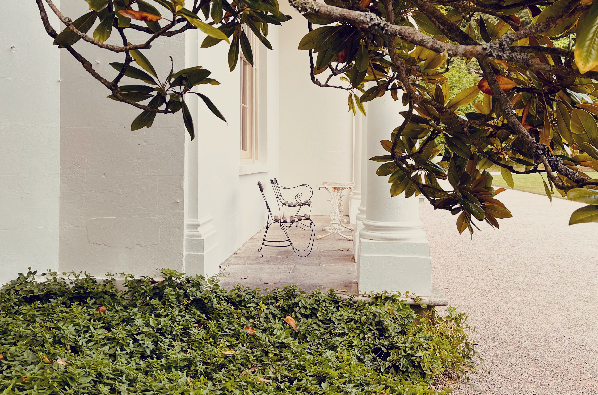
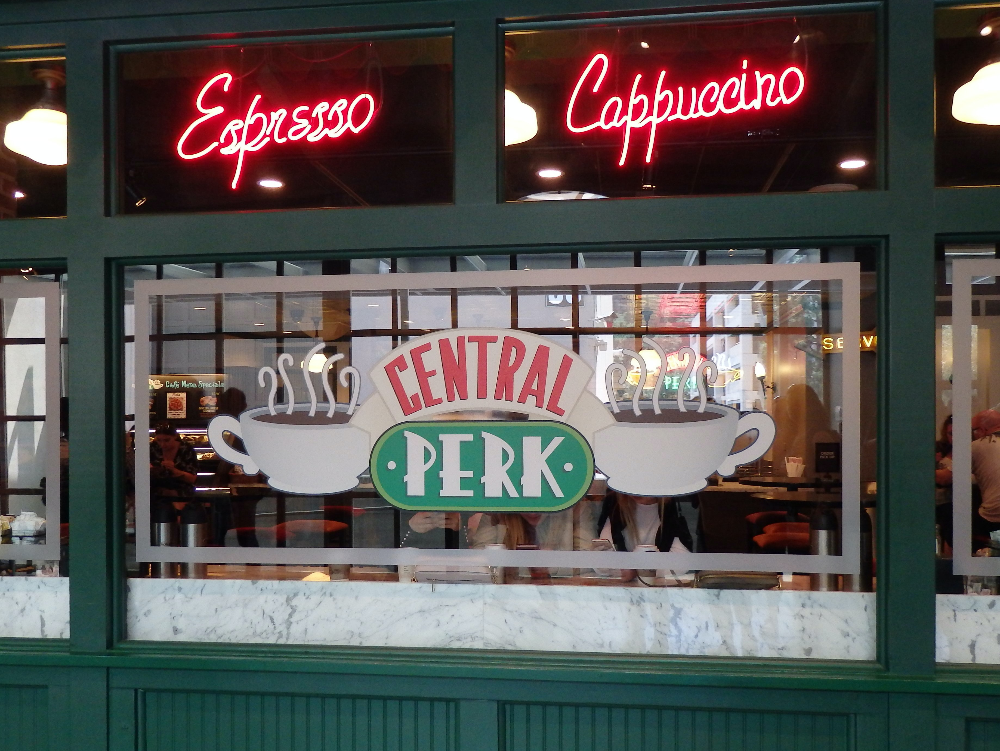

Favourite films
Home
About me
My favourites
Contact
I would like to present some of my favourite films. Many of them I've watched more than 10 times.
My best-loved films
Amelie (France, 2001)

8 Women (France, 2002)
Paper Moon (USA, 1973)
My favourite series

Why women kill (USA, 2019)

Agatha Christie's Poirot (United Kingdom, 1989-2013)

Friends (USA, 1994-2004)